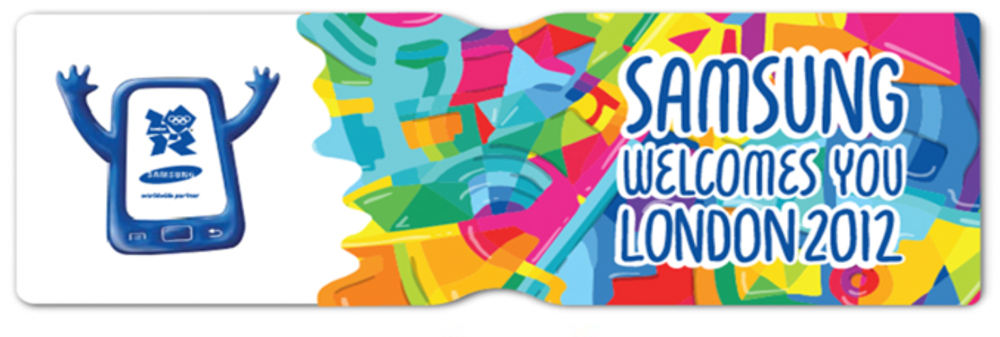

Global sponsorship during the smartphone era.
Supported Samsung’s global Olympic marketing ecosystem during a moment when mobile technology, sports, sponsorship, and global culture were converging at scale.
Eras + Selected Work
My work makes the most sense by era: smartphones, content, regulated media, independent consulting, performance, and AI operations.
01 · The Smartphone Era
I worked on Samsung during the years when mobile technology was moving from utility to culture. The work spanned global sponsorship, fashion partnerships, social storytelling, and launches that helped make devices feel personal, expressive, and everywhere.

Supported Samsung’s global Olympic marketing ecosystem during a moment when mobile technology, sports, sponsorship, and global culture were converging at scale.

A fashion-tech collaboration connecting Galaxy S5, Gear devices, wearables, and style media.

A Samsung-supported fashion video series connecting mobile technology, style media, and behind-the-scenes access.

Samsung invited followers to submit Valentine’s messages, transforming selected entries into illustrated love notes created on Galaxy Note devices using touchscreen technology and the S Pen.
02 · The Content Era
At Canon, the work sat at the intersection of product, creativity, entertainment, and digital media. The goal was to make imaging technology feel emotional, participatory, and relevant in a screen-first world.

A playful branded content program that brought Canon PIXMA into the DIY and creator conversation.

Canon’s Project Imagination platform connected cameras, Hollywood talent, audience participation, and digital film.
03 · The Regulated Era
I also built experience in highly regulated environments, where the work required precision, compliance awareness, stakeholder management, and the ability to move carefully without losing momentum.
Supported pharmaceutical media work where accuracy, approvals, timing, and stakeholder alignment mattered as much as the campaign idea itself.
Worked on high-visibility activation planning in compressed timelines, including Times Square OOH context from the Starcom US era.
04 · The Independent Era
I built an independent consulting practice from the ground up, managing multiple client engagements while owning strategy, execution, reporting, recommendations, and the full relationship lifecycle.
05 · The AI Operations Era
My current work is focused on turning operational friction into infrastructure: forecasting, monitoring, documentation, automation, and AI-supported workflows that help teams move faster.
View systems